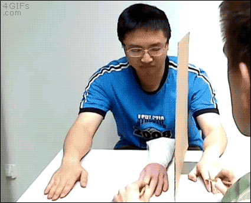

La experiencia consciente del propio cuerpo
Plan
-
La experiencia consciente
-
Modos de aparecer en la consciencia
- Campo sensorial
-
Una teoría sencilla del sentido de pertenencia
-
Sensaciones extendidas
-
Somatoparafrenia
La experiencia consciente
Quiero ofrecer una forma de entender nuestra relación con nuestro propio cuerpo en donde no se hable de representación. La idea es presentar una forma en que somos conscientes de nuestro propio cuerpo. La herramienta explicativa ha de ser la consciencia. (Voy explicar cómo con ayuda de
Brian O’Shaughnessy, Mike Martin y Matt Soteriou)
Todo lo que necesitamos para dar cuenta de la experiencia de nuestro propio cuerpo se puede explicar en términos de que
el cuerpo aparece en nuestra experiencia corporal consciente de dos maneras: como objeto sensorial de la experiencia (análogo a los objetos sensoriales en la visión, aquello de lo cual se tiene directamente experiencia) y como campo sensorial (análogo al campo visual en la visión, aquello en lo cual se estructura la experiencia de objetos).
Cuando se piensa en la experiencia consciente del propio cuerpo típicamente se piensa en lo que en la literatura se llama imagen corporal (body image):
La experiencia subjetiva de la estructura del cuerpo en términos de su tamaño, forma y composición física. (e.g., Longo 2015).
Respecto a la forma de pensar nuestra relación con el propio cuerpo abundan las alternativas en la literatura. (Cf. Longo 2015)
Esto parece ser porque cuando se reflexiona sobre la consciencia de la experiencia de un objeto, terminamos en el objeto mismo. La reflexión sobre la consciencia de un objeto revela al objeto mismo y sus propiedades. En el caso del cuerpo, la reflexión sobre la consciencia del propio cuerpo presenta el cuerpo y su tamaño, forma y composición física.
"The moment we try to fix our attention upon consciousness and to see what, distinctly, it is, it seems to vanish: it seems as if we had before us a mere emptiness. When we try to introspect the sensation of blue, all we can see is the blue: the other element is as if it were diaphanous.
"(Moore 1903)
Una forma de entender lo que dice Moore: cuando se tiene una experiencia consciente aquello que se nos aparece directamente es aquello de lo cual tenemos una experiencia. En la experiencia visual de algo azul, se nos revela algo azul. Y en la experiencia del propio cuerpo, se nos presenta el cuerpo y su tamaño, forma y composición física.
Pero esto no quiere decir que nada más se nos presente. El punto es que aquello que se nos presenta directamente es aquello el objeto de la experiencia. Si algo más se presenta en la experiencia consciente, entonces, tendremos que ver cómo se presenta atendiendo a la forma en que los objetos se presentan. Es decir, cuando algo se presenta indirectamente se presente mediante la presencia de los objetos y sus propiedades.
La consciencia del cuerpo puede ir más allá de la imagen corporal. Eso depende entonces de que podamos darle sentido a un modo distinto en que el cuerpo puede aparecer en la consciencia.
Modos de aparecer en la consciencia
Experiencia del propio cuerpo "is attentively recessive in a high degree, it takes a back seat in consciousness almost all of the time." (O’Shaughnessy 2002, 628)
Más allá de la metáfora. ¿Qué quiere decir que el cuerpo tiene tal o cual puesto en la consciencia?
La sugerencia es que puede haber consciencia del cuerpo cuando tenemos consciencia del cuerpo como objeto perceptual. Ese el caso de lo que usualmente se bsuca ordenar bajo el nombre de imagen corporal.
Pero también podemos tener experiencia del cuerpo cuando el cuerpo sirve como campo sensorial.
Para entender qué significa que el cuerpo sirve como campo sensorial, vale la pena pasar a terrenos más familiares y pensar en la noción de campo sensorial en la visión.
Hay la tentación de pensar el campo visual como algo interno a la mente: el conjunto de pixeles mentales, un mosaico de parches de colores.
Mejor: el campo visual es la región del espacio en el que están los objetos que uno experimenta.
So we can think of normal visual experience as experience not only of objects which are located in some space, but as of a space within which they are located. The space is part of the experience in as much as one is aware of the region as a potential location for objects of vision. This is not to say that one can actually experience all sub-regions of a visual space at one time - the fronts of objects obscure their backs, objects occlude each other. The occluded areas of the visual scene count as part of visual space in the sense that one could come to be aware of something at that location without altering the limits of the visual field provided by the angle of vision at that time. An area can come into view simply by a re-arrangement of things within the field, rather than by changing the field itself. (Martin, p 192)
It is this idea of a visual field or space as part of visual experience itself which is intended. There is no obvious connection between this and some private object of attention such as an internal colour-mosaic. We can think of this visual space as simply a region of public space containing the objects currently seen. (Martin, p 192)
Podemos entonces darle sentido a la idea de que en la experiencia visual estamos conscientes de los objetos y sus propiedades y también de una región espacial. Pero la forma en que somos conscientes de los objetos y sus propiedades no es la misma en que somos conscientes del espacio. Los objetos y sus propiedades se experimentan directamente a la consciencia pero el espacio se presenta sólo en la medida en que hay o potencialmente habría objetos.
Cuando Martin dice que en la experiencia visual uno puede estar consciente de regiones del espacio en donde nada es experimentado pero donde algo podría estar potencialmente tenemos un caso que se debe entender no como una ausencia de experiencia de cosas sino como una experiencia de ausencia de cosas.
Podemos diferenciar entonces tres casos: - La experiencia de un objeto en el espacio. (La experiencia consciente de una silla)
- La experiencia de una ausencia de objetos. (la experiencia consciencia del espacio entre estas dos sillas).
- La ausencia de experiencia. (La relación en la que estoy con el espacio detrás de mi cabeza.)
No es lo mismo experimentar un espacio vacío que no experimentar nada. La diferencia consiste en el primero tenemos una experiencia del espacio pues éste está dentro de nuestros límites sensoriales, mientras que en el segundo no tenemos una experiencia del espacio pues éste se encuentra por fuera de nuestros límites sensoriales
En la experiencia visual, entonces, podemos tener experiencia de objetos y sus propiedades y del espacio.
En la terminología que adoptamos al principio: tenemos experiencia de los objetos sensoriales, tenemos experiencia del campo sensorial, y la forma en que tenemos experiencia del campo no es la misma forma en que tenemos experiencia de los objetos y sus propiedades.
¿Podemos decir algo similar respecto a la experiencia corporal?
El campo sensorial visual es la región del espacio en el que están los objetos que uno experimenta. Pero en el caso de las sensaciones corporales no hay algo algo así.
When you have a visual experience, you seem to be aware of objects that fall within a region of space that you are aware of in having that experience, where the bounds of that region of space seem to you to be determined by your sensory limitations, rather than by the limits of some thing you are sensing. In contrast, in the case of the experience of located bodily sensation, the boundaries of any spatial region you are aware of, within which things are experienced to be, do seem to you to be set by the limits of some thing you are sensing that moves around with you (i.e. your body), rather than by your sensory limitations. (Soteriou 2013, p. 120)
El campo sensorial visual está determinado por mis limitaciones sensoriales: el espacio que percibo es el espacio delimitado por el tipo de aparato sensorial que tengo. (Por ejemplo, por el hecho de que no tengo "ojos en la espalda").
El campo sensorial corporal, el espacio en el que puedo sentir, no parece estar determinado por mis límites sensoriales sino por los límites de mi cuerpo.
Así como todo espacio en el que están los objetos experimentados visualmente está deteminado por mis limitaciones sensoriales, todo espacio en el que puedo tener sensaciones corporales está determinado por mi cuerpo.
In the
case of the experience of located bodily sensation, the boundaries of any spatial region
that one is aware of, within which things are experienced to be,seem to one to be set by
the limits of some thing that one is sensing (i.e.one’s body), rather than by one’s sensory
limitations. (Soteriou 2013, p. 122)
Según Soteriou, este aspecto de la percepción corporal explica que 1) no hay tal cosa como un punto de vista en el campo sensorial corporal, 2) que no sea el caso que las sensaciones corporales se sienten en el espacio pero no el cuerpo, y 3) el hecho de que uno sienta todas sus sensaciones corporales como parte de un mismo cuerpo y no como objetos discretos presentados simultáneamente.
Además, creo yo, esto explica cómo es posible tener consciencia del cuerpo de dos maneras diferentes: como objeto y como campo sensorial. Por ejemplo: en una experiencia de cosquilleo el cuerpo es objeto en la medida en que se siente las pulsaciones de mi mano (por ejemplo) pero también es campo sensorial pues el cosquilleo se siente como estando en una ubicación espacial determinada por el cuerpo.
En nuestra experiencia corporal consciente el cuerpo aparece de dos maneras: como objeto sensorial de la experiencia (análogo a los objetos sensoriales en la visión, aquello de lo cual se tiene directamente experiencia) y como campo sensorial (análogo al campo visual en la visión, aquello en lo cual se estructura la experiencia).
Pero ahora quiero concentrame en sólo UN aspecto de la experiencia corporal consciente, el sentido de pertenencia, y cómo se puede explicar.
El sentido de pertenencia (sense of ownership): El sentido especial en el que experimentamos el propio cuerpo a diferencia de otros objetos. El quale de tener una experiencia del propio cuerpo "desde adentro", cuando sentimos nuestro cuerpo como siendo nuestro.
Reflexionen sobre la diferencia entre la experiencia de ver su mano abierta y sentir su mano abierta.
Creo que se puede dar una buena caracterización filosófica del carácter especial de nuestra experiencia del cuerpo "desde adentro", del sentido de pertenencia, que se base en la estructura espacial de esa experiencia, esto es, en la forma en que las sensaciones se nos presentan como estando en el cuerpo utilizando la distinción entre el cuerpo como campo y el cuerpo como objeto
Una teoría sencilla del sentido de pertenencia
Los casos ordinarios de experiencia corporal, como la de sentir un dolor en el brazo izquierdo, parecen involucrar un sentido de pertenencia. No sólo tengo una experiencia de un dolor en algún cuerpo, sino que me parece que tal sensación está ubicada en MI cuerpo.
Las sensaciones como el dolor pueden sentirse como estando en en parte de un cuerpo que uno de hecho no tiene, como, por ejemplo, en el caso de la dolor fantasma o la ilusión de la mano de goma).
El dolor que siente una persona amputada se presenta en lo que le parece su mano, incluso si no tiene tal mano. El cosquilleo en una mano de goma se siente como estando en su mano, incluso si no se trata de su mano.
(Foto de Golan Levin)
Sentido de pertenencia
Martin (1992, 1993, 1995): en la medida en que hay una consciencia del cuerpo con una estructura espacial particular ya tenemos consciencia del cuerpo como propio. Pues una sensación con cierta esctura espacial ya es sentir esa sensación como estando en el propio cuerpo.
"What marks out a felt limb as one's own is not some special quality that it has, but simply that one feels it in this way." (Martin 1992: 201)
Teoría sencilla del sentido de pertenencia
El cuerpo donde se sienten las sensaciones se siente como propio
Se puede criticar a una teoría sencilla del sentido de pertenencia diciendo que no hay tal modo de consciencia
Quizá hay una forma de consciencia del propio cuerpo con la base en el cual one puede emitir juicios sobre el propio cuerpo, pero no hay tal sentido de pertenencia.
No discutiré esta forma de eliminativismo.
Quiero considerar los argumentos ofrecidos por Frederique de Vignemont en su libro Mind the Body (2018) en contra de esta posición. Ella afirma que hay tal sentido de la pertenencia pero que el carácter espacial no es suficiente para dar cuenta de esto.
El argumento de De Vignemont se base en dos tipos de casos contra tal teoría sencilla del sentido de pertenencia:
- Sensaciones extendidas: casos de usos de herramientas en los que es posible para un sujeto tener sensaciones de manera no metafórica en herramientas, pero donde esa herramienta no se siente como parte del cuerpo.
- Somatoparafrenia: casos de una patología en la que el sujeto experimenta sensaciones corporales en su cuerpo pero no las siente como estando en su propio cuerpo.
"So, further, does the woodcutter feel, along with the axe’s reaction against his hand, its hissing cleaving of the wood; so does the soldier feel his weapon piercing the flesh of his antagonist." (Lotze, 1888, pp. 588–9, citado por De Vignemont 36)
La incorporación de herramientas en algunas representaciones corporales (Martel et al., 2016) muestra que puede haber algunos casos en los que el uso de una herramieta extiende el sentido del cuerpo (se siente como si el cuerpo se extendiera). Pero sin embargo, no hay sentido de pertenencia de la herramienta –como sí lo hay en el caso de la mano de goma.
El soldado no es consciente de su arma como parte de su cuerpo en el mismo sentido en el mismo sentido en el que se siente como propia la mano de goma en las condiciones experimentales apropiadas.

En el caso de las herramientas, afirma de Vignemont, se puede tener una sensación en una herramienta sin que haya un sentido de la propiedad de esa herramienta como parte del propio cuerpo. Hay algún problema?
No
...si reflexionamos apropiadamente sobre la manera en que la consciencia sensorial se extiende.
Cases of tool use, De Vignemont argues, should not be understood as instances of indirect perception as those of being aware the mailperson is here by hearing the dog barking.
Rather, they should be understood as cases of direct awareness, like that of being aware of the mailperson has arrived by hearing their voice.
Even if we grant De Vignemont's point about the direct perception in tool use, it is not clear that the evidence is problematic for the Simple view of bodily ownership.
One may think that the cases of referred sensations in tools are like what O’Shaughnessy calls a transportation of appearance (2008, p. 395) where, thanks to the tool, there is a reliable transportation of what would be sensed were one in a different spatial location.
Just like a telescope transports the appearance of faraway objects for us to see as if they were here, we can think of canes as transporting what would be a bodily sensation we would have if our body extended as far as the tool goes.
And yet: if referred sensations are understood as an extension by transportation of our sensory capacities it is not clear that De Vignemont’s conclusion follows.
No es claro que las extensiones de los sentidos funcionan exactamente igual que los sentidos ordinarios, sin extender. La extensión de los sentidos puede modificar el carácter de nuestra experiencia de manera en que el sentido de pertenencia se pierde.
Esta falta en transportar el carácter completo de la experiencia se puede apreciar en los casos más interesantes de extensión de los sentidos: la substitución sensorial (sensory substitution).
Sujectos que utilizan TVSS (Tactile Visual Sensory Substitution) o vOICe extienden sus capacidades visuales explotando el sentido del tacto en la medida en que el aparato toma input de la cámara y produce output táctil. (Paul Bach-y-Rita y otros)
¡¿Extender?!
Sí. Los reportes perceptuales que ofrecen los sujetos apoyan la idea de que pueden ver en la medida en que pueden reconocer un rango de objetos oridinario, apuntar a ellos en el espacio e incluso determinar la distancia del sujeto y el tamaño real del objeto. Algunos incluso reportan tener un sentido 3D del embiente. ¡Buena parte de lo que nos da la visión ordinaria!
Y sin embargo, los sujetos usando estos dispositivos no tienen un aspecto crucial de la experiencia visual: no experimentan color –algo que parecería imposible en la experiencia visual ordinaria.
La substitución sensorial sugiere que incluso si el uso de herramientas extiende nuestras capacidades de tener sensaciones corporales, no hay razón para pensar que esas sensaciones tendrían la misma naturaleza fundamental que las sensaciones sentidas en el cuerpo. En particular, no hay razón para pensar que incluye el sentido de pertenencia.
¿Es el sentido de pertenenecia una cualidad de la sensación corporal adicional a a sus propiedades espaciales?
La evidencia presentada por las sensaciones extendidas en las herramientas no sirve para defender el punto de de Vignemont.
Algunas experiencias de dolor de sujetos con somatoparafrenia (asomatognosia) presuntamente muestra un contra-ejemplo a la teoría sencilla del sentido de pertenencia, pues parecen ser casos en donde hay sensaciones corporales en el cuerpo propio sin un sentido de que es un cuerpo propio.
¡¿Parecen sentir dolor en un cuerpo que no es el propio?!
P: I still have the acute pain where the prosthesis is.
E: Which prosthesis?
P: Don’t you see? This thing here (indicating his left arm). The doctors have attached this tool to my body in order to help me to move [...] Once home could I ask my wife, from time to time, to remove this left arm and put it in the cupboard for a few hours in order to have some relief from pain? (Maravita, 2008, p. 102).
Los pacientes son reportan un dolor en una parte de su cuerpo pero dicen sentir esa parte de su cuerpo como siendo, por ejemplo, una prótesis, o de algún familiar o del examinador. Es un dolor que se siente en una parte del propio cuerpo pero que no se siente como parte del propio cuerpo.
¿Cómo podría responder una teoría sencilla del sentido de pertenencia?
Diferencia entre dos aspectos espaciales de la experiencia corporal.
Me explico.
Aunque los pacientes con somatoparafrenia tienen consciencia de las propiedades espaciales de sus sensaciones corporales (pueden ubicarlas en aquello que sienten como un cuerpo extraño), no están conscientes de otras.
En los casos ordinarios de consciencia corporal, hay un sentido de los límites dentro de los que se puede sentir. Hay un sentido de los límites de la propia experiencia en la medida en que hay un sentido de los límites del propio cuerpo.
Hay un sentido de los límites posibles de la experiencia como constituidos por el cuerpo.
Diferencia entre dos aspectos espaciales de la experiencia corporal.
- Un sentido de la ubicación de la sensación
- Un sentido de los límites dentro de los cuales puede estar una sensación
En los casos de somatoparafrenia, los pacientes carecen de un sentido de un sentido de los límites de la sensación: no son conscientes de por qué la sensación se siente dentro de esos límites y no, por ejemplo, tres metros más allá.
¿Por qué justo sienten el dolor en ese brazo (el que presuntamente no les pertenece) de esa manera y no en cualquier otro lugar o manera?
Los sujetos sienten dolor en una ubicación determinada por el espacio ocupado por su propio cuerpo, pero no lo sienten como determinado por su propio cuerpo.
La estructura espacial de su experiencia está atada al cuerpo en el que se sienten pero no se les presenta así, lo que se presta para decir que se trata de un familiar o una prótesis.
¿Entonces?
Un forma de responder a los casos de somatoparafrenia es rechazar la idea de que son sensaciones corporales propiamente. Y entenderlas como he sugerido debemos hacer con las sensaciones extendidas.
Pero creo que es mejor entenderlas como casos en los que los subjetos tienen una limitación en su experiencia espacial que explica la ausencia del sentido de pertenencia.
En la experiencia corporal "desde adentro" hay consciencia de una sensación en una región del espacio que es sentida como parte de un espacio más grande determinado por el cuerpo.
Los paciencies con somatoparafrencia son conscientes de una sensación en el espacio pero no como determinada por su cuerpo.
¿Es el sentido de pertenenecia una cualidad de la sensación corporal adicional a a sus propiedades espaciales?
La evidencia presentada por la somatoparafrenia no sirve para defender el punto de de Vignemont.
Para concluir: Quizá el carácter especial de la consciencia corporal como teniendo un sólo objeto, en contraste con los cinco sentidos tradicionales, esta sobrevalorado.
Aunque la consciencia corporal no implica la identificación de un objeto entre otros, es no quiere decir que sólo el objeto se presente. Hay varias maneras en que se nos presenta con diferentes propiedades espaciales.
La consciencia corporal es sólo supercialmente como un caso de simultanagnosia. Uno es consciente directmente sólo del cuerpo, pero además tenemos un sentido de los límites de la sensación que es más de lo que provee el objeto del que somos conscientes.
Pero eso ya queda para la próxima.
¡Gracias!
Juan-Camilo Espejo-Serna
Facultad de filosofía y ciencias humanas
Universidad de la Sabana
juan.espejo1@unisabana.edu.co